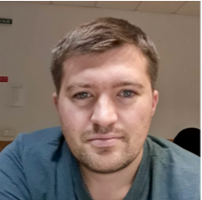

Stanchenko Nazar

e-mail: stanchenkon@gmail.com
telegram: @stanchenkon
skype: nazarstanch
03.02.1986
Ukraine, Sumy, Kiev
Manual QA Engineer
Experience:
I worked for Netcracker on projects “Cloud Platform” and “Rakuten”.
I have a clear understanding of SDLC and all aspects of product testing and release processes.
My work on previous projects was:
* Writing test documentation (TC, bug report);
* Manual web testing (system, functional, UI/UX, integration, smoke, regression);
* Setup environment in OpenStack, OpenShift, Kubernetes;
* Deploy new builds on server use Jenkins;
* Functional and non-functional, UI/UX, API Testing;
* Running auto-tests;
* Test mobile application (Android/IOS);
* Reporting defects in Jira;
* Organization and planning of the work of a small team
Work skills:
I used such software products and technologies as:
MacOS, Linux, Windows, Android, IOS,
Manual Testing, Regression Testing, Functional Testing, Web Testing, Mobile Testing, Jira,
API Testing, Postman, Swagger, Zabbix, Grafana, Graylog, SQL, Git, Jenkins,
OpenShift, OpenStack, Kubernetes, Docker, RobotFramework
Have worked:
06.2018 - 08.2020: Manual QA Engineer “Netcracker”
2006-2018: Technical Center "RADIO SYSTEMS" (Internet provider in Sumy) Engineer.
Have worked:
2007-2008: Course Cisco CCNA at the training center Ukrainian Academy of Banking
Studied:
2003-2008: Ukrainian Academy of Banking of the National Bank of Ukraine, Economic Cybernetics, Specialist
I am looking for work on promising and interesting projects on a long-term basis, an active and friendly team, an opportunity to learn and develop professional